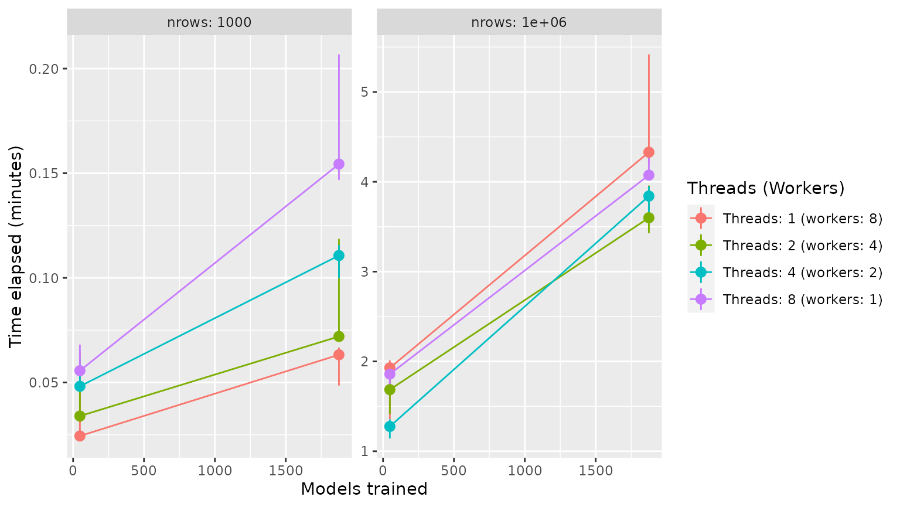

doParallel::registerDoParallel(8) then tune_grid()/tune_bayes()
set_engine("catboost", nthread = 8) then fit()/last_fit()
library(tidymodels)
library(treesnip)
big_mtcars <- mtcars %>% sample_n(100000, replace = TRUE)Set doParallel::registerDoParallel(8) before tune_grid() or tune_bayes() and you are good to go. Just a reminder to watch out the memory usage. Forking can make your machine run out of memory.
# model spec
model <- boost_tree(tree_depth = tune()) %>%
set_mode("regression") %>%
set_engine("catboost")
# set_engine("lightgbm")
# recipe
rec <- recipe(mpg ~ ., data = big_mtcars)
# workflows
wf <- workflow() %>% add_recipe(rec) %>% add_model(model)
# parallel tune grid
doParallel::registerDoParallel(8)
tg <- tune_grid(wf, vfold_cv(big_mtcars, 5))In summary, all you have to do is set nthread = x where x is the number of threads to use, usually the number of CPU cores to let the engine use from you own computer. E.g. set_engine("lightgbm", nthread = 8).
Parsnip principles states that parallel processing must be explictly requested by the user1, so if nthread were not specified, just a single thread will be used. `
model <- boost_tree(tree_depth = tune()) %>%
set_mode("regression") %>%
set_engine("catboost", nthread = 8) %>%
finalize_model(select_best(tg, "rmse"))
wf <- workflow() %>% add_recipe(rec) %>% add_model(model)
definitive_fit <- fit(wf, big_mtcars)PS: originally, there is no nthread parameter for {catboost} but {treesnip} made nthread an alias for thread_count for convenience.
workers*threads = 8)further reading: Parallel Processing from Applied Predictive Modeling (Kuhn and Johnson, 2014)
library(tidymodels)
library(treesnip)
# main function to tune_grid with given benchmark parameters
execute_tune_grid <- function(df, threads, workers, cv_folds, tune_grid, engine = "lightgbm") {
##############################################################
df_splits <- vfold_cv(df, v = cv_folds)
df_rec <- recipe(mpg ~ ., data = df)
df_model <- boost_tree(
mtry = 3,
trees = 600,
sample_size = 0.7,
min_n = tune(),
tree_depth = tune(),
learn_rate = tune(),
loss_reduction = tune()
) %>%
set_mode("regression") %>%
set_engine(as.character(engine), nthread = threads)
df_wf <- workflow() %>%
add_model(df_model) %>%
add_recipe(df_rec)
##############################################################
doParallel::registerDoParallel(workers)
tg <- tune_grid(df_wf, df_splits, grid = tune_grid)
tg
}
# parameters
parameters <- expand.grid(
engine = "lightgbm",
cv_folds = 8,
tune_grid = c(2, 5, 10),
nrow = c(1e2, 1e4, 1e6),
threads = c(1, 2, 4, 8)
) %>%
mutate(
workers = 8 %/% threads
) %>%
bind_rows(
expand.grid(
engine = "lightgbm",
cv_folds = 8,
tune_grid = c(2, 5, 10),
nrow = c(1e2, 1e4, 1e6),
threads = 1,
workers = 1
)
)
# bench::mark
set.seed(1)
bm <- bench::press(
{
Sys.sleep(2)
df <- mtcars %>% sample_n(nrow, replace = TRUE)
bench::mark(
execute_tune_grid(df, threads, workers, cv_folds, tune_grid, engine),
check = FALSE,
iterations = 3,
memory = FALSE,
filter_gc = FALSE,
time_unit = "m"
)
},
.grid = parameters
)
bm %>%
mutate(
nrow = paste("nrows:", nrow),
models_trained = (tune_grid ^ 4) * cv_folds,
max = map_dbl(time, max)/60,
threads = glue::glue("Threads: {threads} (workers: {workers})")
) %>%
ggplot(aes(x = models_trained, y = median, colour = factor(threads))) +
facet_wrap(~nrow, scales = "free_y") +
geom_pointrange(aes(ymin = min, ymax = max)) +
geom_line() +
labs(x = "Models trained", y = "Time elapsed (minutes)", colour = "Threads (Workers)")